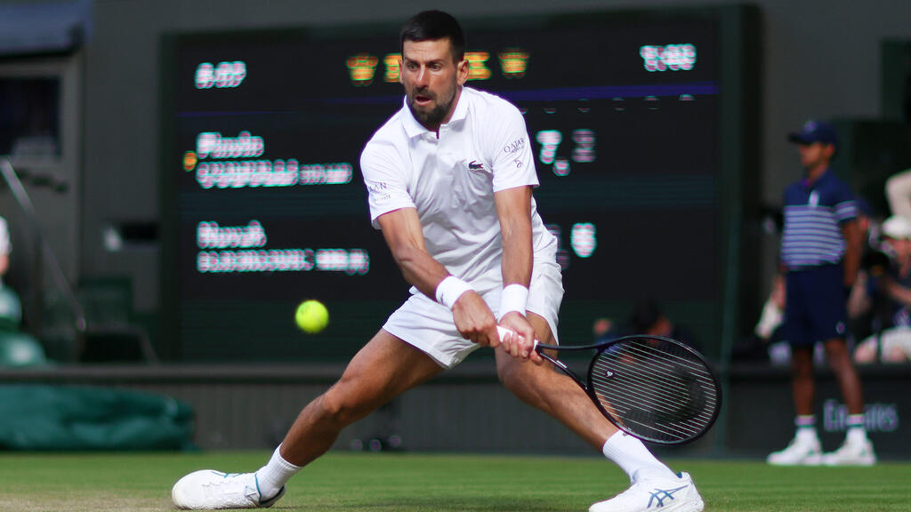

Novak Djokovic CV
Contacts
- Email: team@novakdjokovic.com
- Location: Belgrade, Serbia
- Website: https://novakdjokovic.com
- Instagram: @djokernole
- Twitter: @DjokerNole
About Me
I am Novak Djokovic — a professional tennis player from Serbia, ranked among the greatest athletes in the history of sports. My career has been built on consistency, discipline, and mental resilience. I apply the same dedication to everything I pursue, including personal growth, philanthropy, and technology. I'm passionate about learning new things and embracing challenges both on and off the court.
Skills
Tennis Skills
- Forehand – Powerful and consistent
- Backhand – One of the best two-handers in history
- Return of Serve – Fast reflexes and anticipation
- Movement – Excellent court coverage and flexibility
- Mental Strength – Clutch performance under pressure
- Strategy – Tactical and analytical gameplay
Technical Skills
- HTML5
- CSS3
- Git
- GitHub
- Markdown
Code Example
<!DOCTYPE html>
<html lang="en">
<head>
<meta charset="UTF-8">
<title>Hello</title>
</head>
<body>
<h1>Hello, world! I want to win Wimbledon</h1>
</body>
</html>
Projects
- RS School CV: https://github.com/Kris13789/rsschool-cv
Work Experience
Professional Tennis Player
2003 – Present- 24× Grand Slam Champion (most in history)
- 428+ weeks as World No. 1 (ATP record)
- Career Grand Slam (achieved twice)
- Olympic Bronze Medalist – Beijing 2008
- Davis Cup Champion – 2010
- Laureus World Sportsman of the Year – 4 times
Founder, Novak Djokovic Foundation
2007 – Present- Focus: Early childhood education and development
- Over 50 schools built or supported in Serbia
- Website: https://novakdjokovicfoundation.org
Education
- Sports Gymnasium, Belgrade – High School Diploma
- Honorary Doctorate, University of Sarajevo – 2021
Online Learning (self-initiated):
- HTML & CSS Basics
- Git & GitHub Fundamentals
- Markdown syntax and usage
Languages
- Serbian – Native
- English – Fluent
- French – Intermediate
- Italian – Basic
- German – Basic